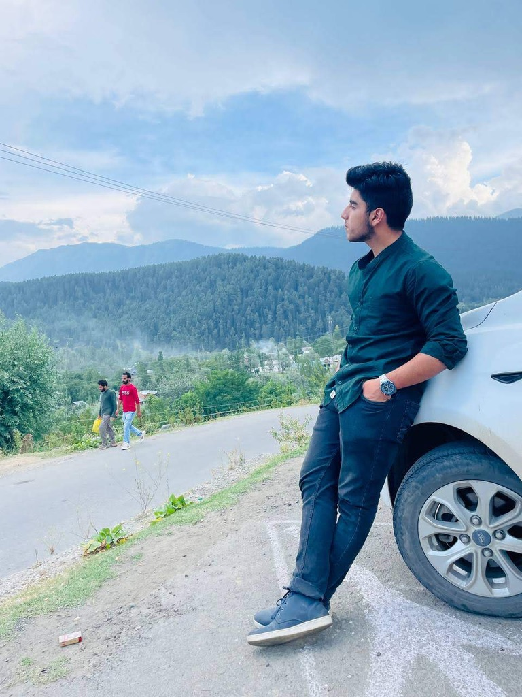
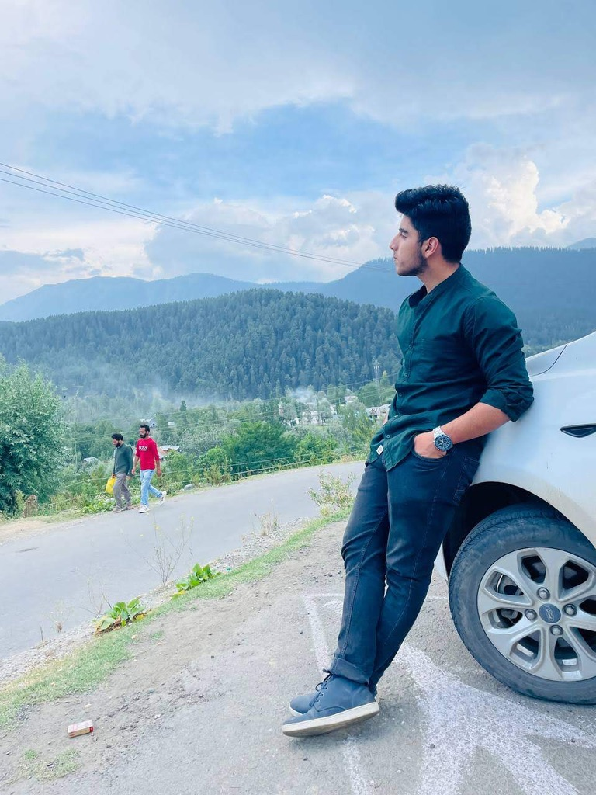

A glimpse into me.

 

About
Hello there! I'm Sheikh Arsalan Originally from Kashmir, I'm now based in the Lovely Professional University(LPU) persuing my CSE bachelor's degree.
My curiosity for computers began at an early age, which naturally led me to pursue a career in tech. My journey is fueled by a relentless curiosity and a love for growth, whether it’s diving deep into algorithms or exploring the world beyond my comfort zone
Alongside my coding journey, I play football, football isn’t just a sport for me, it’s a way to connect, compete, and keep my mind sharp. Traveling is my escape and inspiration, as I enjoy immersing myself in new cultures, meeting diverse people, and collecting experiences that shape my worldview. Books are my sanctuary, offering me adventures and wisdom within their pages
’m also a lifelong learner, driven to master new languages and acquire unique skills that challenge and empower me. With a foot in technology and a heart open to the world, I’m constantly pushing boundaries to craft a life that’s as dynamic as my aspirations. When I'm not at my desk, you can find me at the gym :)